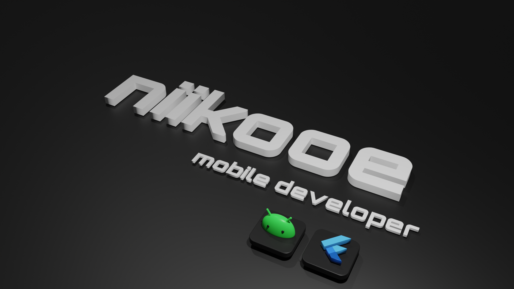

Scroll down to explore
hi
Let's build mobile apps
with flutter and kotlin framework
Expertise
Multiplatfrom Developer
Skilled in developing
Multiplatform mobile apps
using the Flutter framework.
“The Flutter framework is a UI toolkit that helps developers create high-performance, high-fidelity applications for iOS, Android, Linux, Mac, Windows, etc. At its core, it lets developers build an application UI using widgets that have different states and react to specific events.”

Android Developer
Skilled in developing
android mobile apps
using the Kotlin framework.
“Android OS is a Linux-based mobile operating system that primarily runs on smartphones and tablets. The Android platform includes an operating system based upon the Linux kernel, a GUI, a web browser and end-user applications that can be downloaded.”